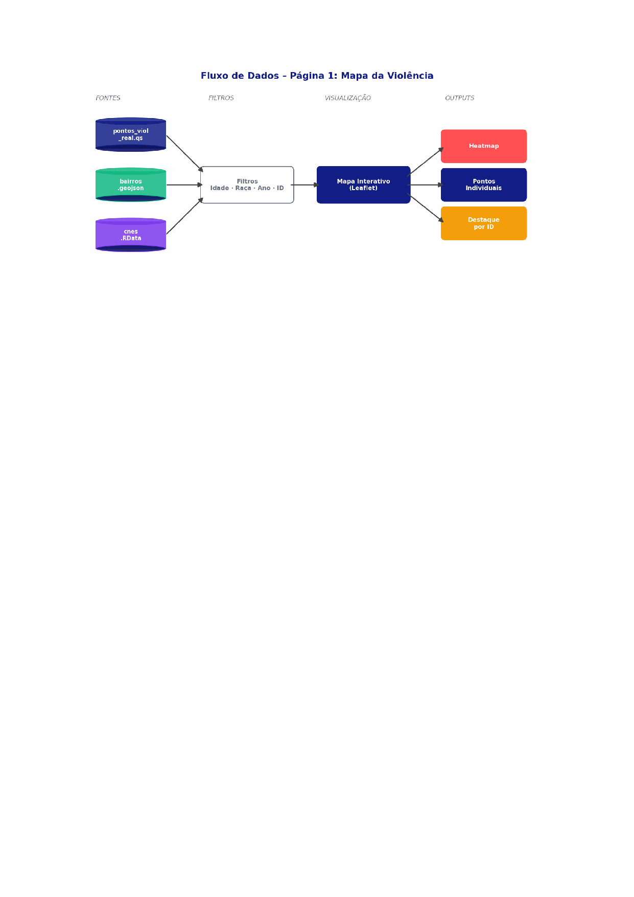
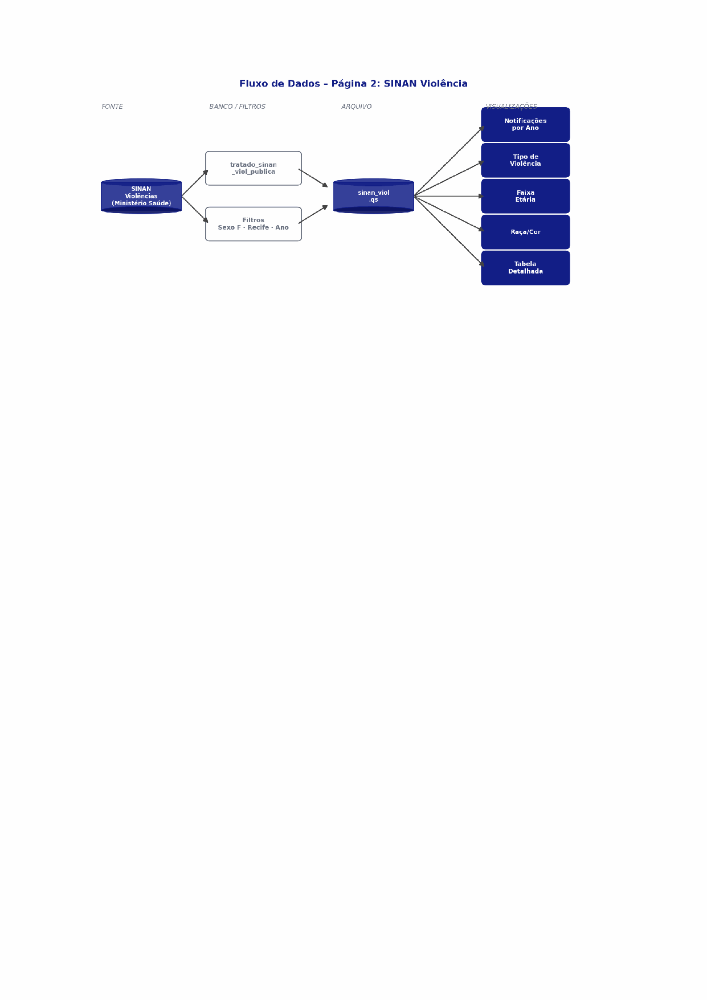
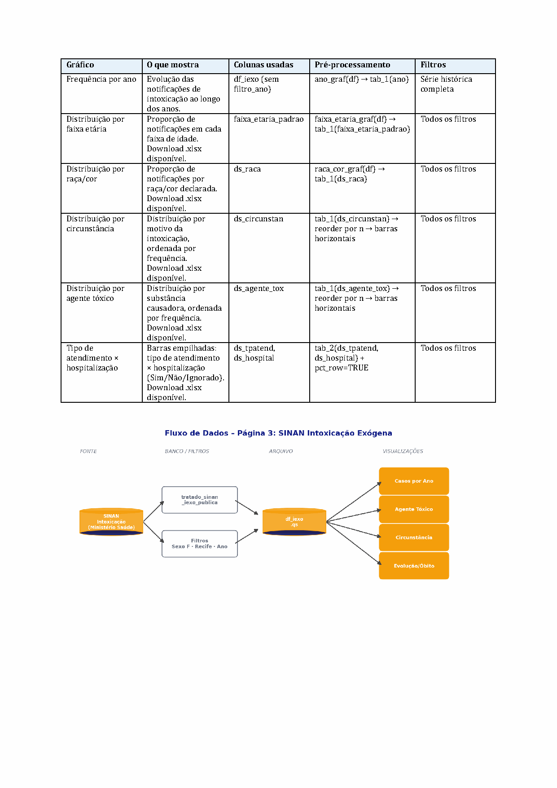
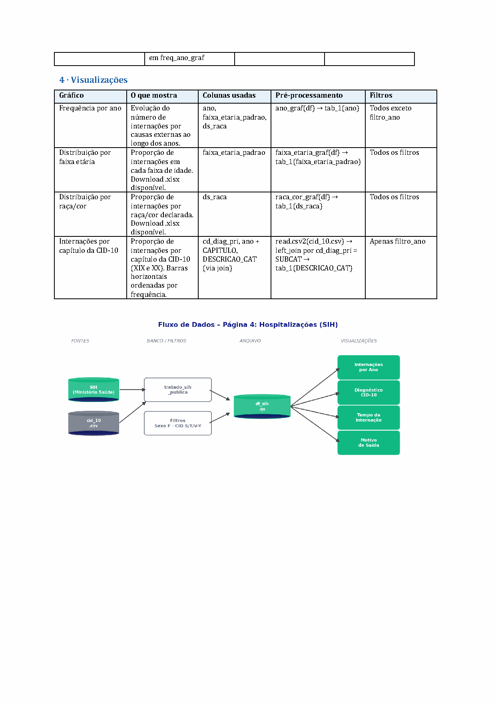
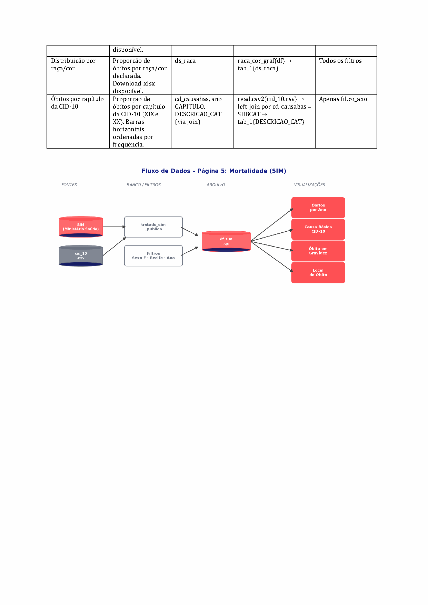
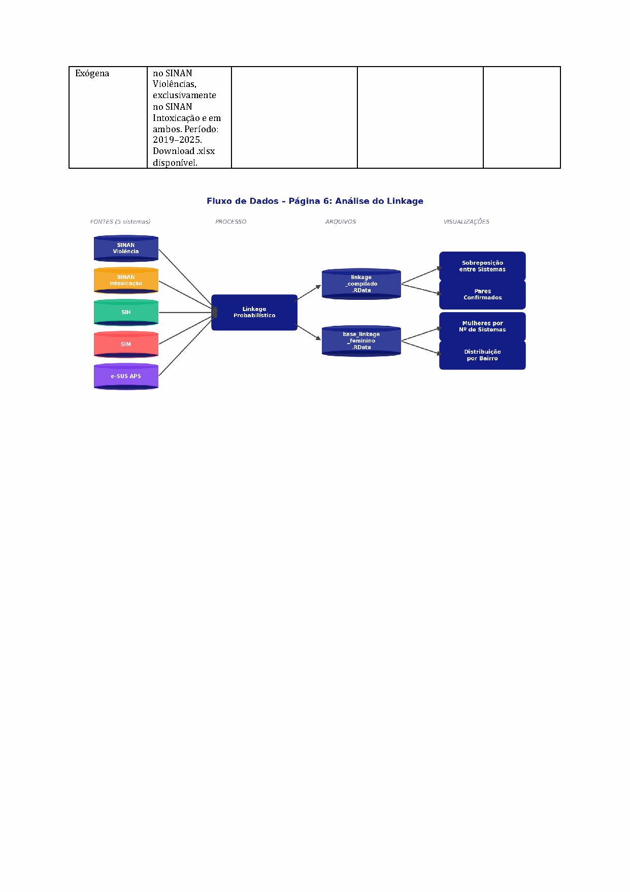
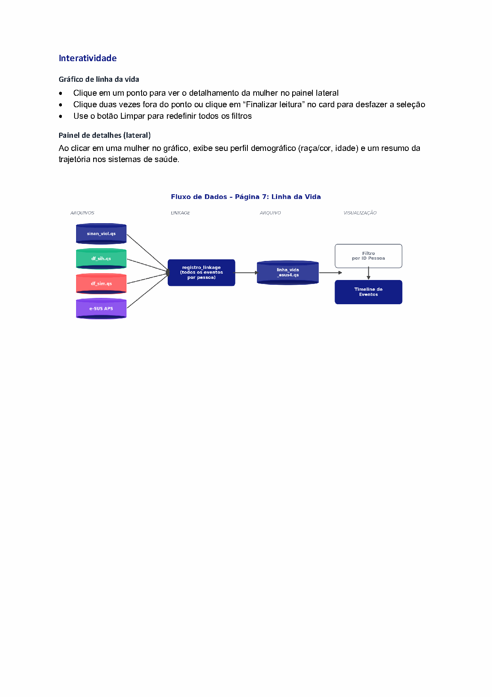
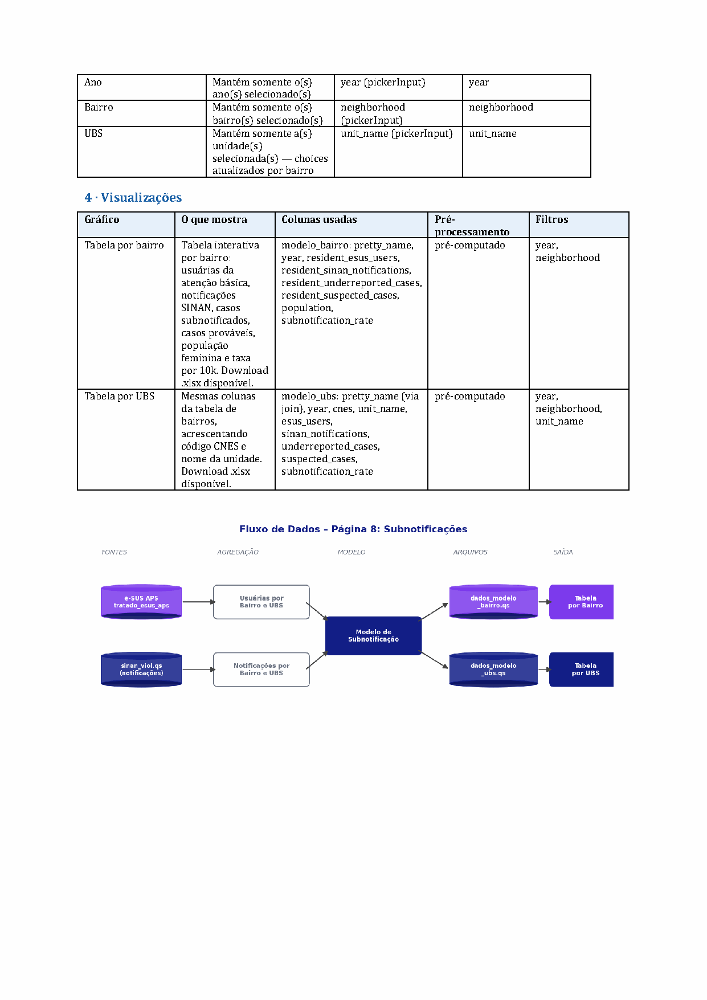

Painéis Vigilância — Recife
Este documento descreve a origem dos dados, as variáveis utilizadas, os pré-processamentos aplicados e a lógica de cada visualização em cada página do painel da Vital Strategies entregue à vigilância de Recife.
Índice de páginas
Mapa da Violência
O que é essa página?
Apresenta um mapa interativo de Recife com a localização geográfica das residências das mulheres identificadas nos registros do SINAN Violência, sobreposta aos bairros da cidade e às unidades de saúde (CNES). Permite visualizar a distribuição espacial dos casos de violência e identificar concentrações por região.
De onde vêm os dados?
- Pontos das mulheres: coordenadas geográficas com informações demográficas e trajetória nos sistemas. Originados do linkage probabilístico.
- Bairros de Recife: polígonos (shapefile) dos bairros.
- Unidades de saúde: localização e nome das unidades do CNES.
Fontes dos dados
global.R e mapa_ui.R.| Coluna / Arquivo | Tabela de origem | Descrição |
|---|---|---|
| pontos_viol_real.qs | dados/pontos_viol_real.qs | Mulheres com ≥1 notificação SINAN; coordenada do endereço mais recente via linkage probabilístico (SINAN Viol + SIH + SIM + e-SUS APS) |
| cnes.RData | dados/cnes.RData | Cadastro de unidades: cd_cnes_unid_not, NO_FANTASIA, latitude_cnes, longitude_cnes |
| cnes_join.RData | dados/cnes_join.RData | Join CNES ↔ id_unico: cd_cnes_unid_not, texto_final |
| bairros.geojson | dados/bairros.geojson | Polígonos dos bairros do Recife (objeto sf) |
| linha_vida_esus4.qs | dados/linha_vida_esus4.qs | Trajetória nos sistemas (df_linha_vida): texto_final e datas |
Transformações no carregamento
| Transformação | Descrição |
|---|---|
| mutate(Latitude, Longitude, ano_geo) | Converte para numeric/integer |
| left_join(cnes_join, by=id_unico) | Enriquece df_linha_vida com cd_cnes_unid_not e texto_final |
| left_join(df_linha_vida2, by=id_unico) | Adiciona trajetória e texto_final a pontos_viol |
| mutate(cd_cnes_unid_not = as.numeric(...)) | Garante tipo numérico para match com selected_cnes |
| st_read(dados/bairros.geojson) | Carrega polígonos como objeto sf |
Filtros reativos
filtro_id_pessoa não filtra linhas — apenas define highlight=TRUE na linha correspondente.| Filtro | O que faz | Input | Variável |
|---|---|---|---|
| Raça/cor | Mantém só mulheres da raça selecionada | filtro_raca | ds_raca |
| Idade | Mantém mulheres dentro da faixa de idade | filtro_idade | nu_idade_anos |
| Ano | Mantém registros do período selecionado | filtro_ano | ano_geo |
| ID Pessoa | Destaca a mulher no mapa (highlight=TRUE, não remove linhas) | filtro_id_pessoa | id_pessoa |
| CNES | Mantém só mulheres atendidas naquela unidade | selected_cnes (clique no mapa) | cd_cnes_unid_not |
Camadas do mapa
| Visualização | O que mostra | Colunas usadas | Filtros |
|---|---|---|---|
| Polígonos dos bairros | Contornos dos bairros de Recife | mapa (sf) | Nenhum |
| Marcadores CNES | Localização das unidades de saúde cadastradas no CNES | cnes | selected_cnes |
| Marcadores de pontos | Cada ponto representa uma mulher com ≥1 notificação de violência, posicionada pela coordenada do endereço mais recente | pontos_viol | Todos; destaque se highlight=TRUE |
| Mapa de calor | Concentração espacial dos casos — áreas de maior densidade, sem pontos individuais | pontos_viol | Todos; ativado por toggle_heatmap |
Diagrama de fluxo — Página 1

SINAN Violência
O que é essa página?
Apresenta análises sobre as notificações de violência doméstica, sexual e outras violências interpessoais registradas em Recife. Os dados cobrem o período de 2016 a 2025.
De onde vêm os dados?
Ficha de Violência Doméstica, Sexual e/ou Outras Violências Interpessoais. Profissionais de saúde registram obrigatoriamente casos suspeitos e confirmados. Cada linha representa uma notificação individual.
Fontes dos dados
tratado_sinan_viol_publica (PostgreSQL). Resultado salvo como sinan_viol.qs → objeto df_sinan. Filtro: sg_sexo = F.| Coluna | Tabela de origem | Descrição |
|---|---|---|
| id_pessoa | tratado_sinan_viol_publica | Identificador único da mulher (chave de linkage) |
| nu_idade_anos | tratado_sinan_viol_publica | Idade em anos |
| ds_raca | tratado_sinan_viol_publica | Raça/cor declarada |
| ano | tratado_sinan_viol_publica | Ano da notificação |
| ds_bairro_res | tratado_sinan_viol_publica | Bairro de residência |
| autor_sexo | tratado_sinan_viol_publica | Sexo do agressor (código — decodificado em viol_ui.R) |
| autor_alco | tratado_sinan_viol_publica | Suspeita de uso de álcool pelo agressor |
| les_autop | tratado_sinan_viol_publica | Lesão autoprovocada (código — decodificado em viol_ui.R) |
| local_ocor | tratado_sinan_viol_publica | Local de ocorrência (código 2 dígitos — decodificado em viol_ui.R) |
| out_vezes | tratado_sinan_viol_publica | Ocorrência repetida (código — decodificado em viol_ui.R) |
| viol_fisic … viol_outr | tratado_sinan_viol_publica | Flags de tipo de violência (0/1) |
| ag_forca … ag_outros | tratado_sinan_viol_publica | Flags de meio de agressão (0/1) |
| def_trans … def_espec | tratado_sinan_viol_publica | Flags de deficiência da vítima (0/1) |
| tran_ment, tran_comp | tratado_sinan_viol_publica | Flags de transtorno mental/comportamental (0/1) |
| rede_sau … enc_vara | tratado_sinan_viol_publica | Flags de encaminhamento para serviços (0/1) — combinados em pares em viol_ui.R |
Derivações
global.R e viol_ui.R. Flags filtro_viol_* criadas para cada tipo de violência.| Coluna derivada | Lógica |
|---|---|
| faixa_etaria_padrao | faixa_etaria_func(nu_idade_anos) |
| filtro_viol_fisica … filtro_viol_autoprovocada | Flag binária por tipo de violência (usada nos filtros) |
| ds_tipo_violencia | Descrição concatenada dos tipos de violência presentes |
| ds_autor_sexo | Decode: 1→Masculino, 2→Feminino, 3→Ambos, else Ignorado |
| les_autop (decodificado) | Decode: 1→Sim, 2→Não, 9/NA→Ignorado |
| local_ocor (decodificado) | Decode código 2 dígitos para texto legível |
| out_vezes (decodificado) | Decode: 1→Sim, 2→Não, 9→Ignorado |
| rede_enc_sau … infan_enc_juv | OR dos dois flags de encaminhamento correspondentes |
Filtros reativos
filtro_violencias usa filter_at — retém linhas onde qualquer flag selecionada = 1.| Filtro | O que faz | Input | Variável |
|---|---|---|---|
| Faixa etária | Mantém mulheres dentro da faixa de idade | filtro_idade | faixa_etaria_padrao |
| Raça/cor | Mantém só mulheres da raça selecionada | filtro_raca | ds_raca |
| Ano | Mantém registros do período — não aplicado em freq_ano_graf | filtro_ano | ano |
| Tipo de violência | Mantém notificações com o tipo marcado | filtro_violencias | filtro_viol_* (flags) |
| Lesão autoprovocada | Mantém pelo status selecionado | les_autop_fil | les_autop |
Gráficos e tabelas
| Visualização | O que mostra | Pré-processamento | Filtros |
|---|---|---|---|
| Frequência por ano | Evolução do número de notificações ao longo dos anos | ano_graf(df) → tab_1(ano) | Todos exceto filtro_ano |
| Distribuição por faixa etária | Proporção de notificações em cada faixa de idade. Download .xlsx. | faixa_etaria_graf(df) → tab_1(faixa_etaria_padrao) | Todos os filtros |
| Distribuição por raça/cor | Proporção de notificações por raça/cor declarada. Download .xlsx. | raca_cor_graf(df) → tab_1(ds_raca) | Todos os filtros |
| Tabela de categorias SINAN | Tabela interativa cruzando uma categoria com uma variável de estratificação. Download .xlsx. | tab_cat_sinan(filtered_df, extrato, valor) | Todos os filtros |
| Sexo do agressor × uso de álcool | Barras empilhadas: sexo do agressor × suspeita de uso de álcool | tab_2(ds_autor_sexo, autor_alco) + pct_row=TRUE | Todos os filtros |
| Tabela cruzada configurável | Tabela de dupla entrada montada livremente pelo usuário. Download .xlsx. | tabela_2(df, var_row, var_col) → pivot_wider + adorn_totals | Ignora filtro_violencias |
Diagrama de fluxo — Página 2

SINAN Intoxicação Exógena
O que é essa página?
Apresenta análises sobre as notificações de intoxicação exógena registradas em Recife — casos em que uma pessoa foi exposta a substâncias tóxicas como medicamentos, agrotóxicos, drogas ou produtos químicos. Dados de 2016 a 2025.
De onde vêm os dados?
Ficha de Intoxicação Exógena. Profissionais de saúde registram obrigatoriamente casos suspeitos e confirmados de exposição a substâncias químicas, plantas ou alimentos tóxicos, desde que o paciente apresente sinais e sintomas clínicos. Cada linha representa uma notificação individual.
Fontes dos dados
tratado_sinan_iexo_publica. Resultado salvo como df_iexo.qs → objeto df_iexo. Filtro: sg_sexo = F.| Coluna | Tabela de origem | Descrição |
|---|---|---|
| id_pessoa | tratado_sinan_iexo_publica | Identificador único da mulher (chave de linkage) |
| nu_idade_anos | tratado_sinan_iexo_publica | Idade em anos |
| ds_raca | tratado_sinan_iexo_publica | Raça/cor declarada |
| ano | tratado_sinan_iexo_publica | Ano da notificação |
| ds_circunstan | tratado_sinan_iexo_publica | Circunstância da intoxicação (tentativa de suicídio, acidente, etc.) |
| ds_agente_tox | tratado_sinan_iexo_publica | Substância causadora da intoxicação |
| ds_tpatend | tratado_sinan_iexo_publica | Tipo de atendimento (ambulatorial, hospitalar, domiciliar, etc.) |
| ds_hospital | tratado_sinan_iexo_publica | Hospitalização (Sim / Não / Ignorado) |
Derivações
faixa_etaria_padrao derivada via faixa_etaria_func(). Sem outras transformações.Filtros reativos
freq_ano_graf usa df_iexo sem filtro_ano (série histórica completa).| Filtro | O que faz | Input | Variável |
|---|---|---|---|
| Raça/cor | Mantém só mulheres da raça selecionada | filtro_raca | ds_raca |
| Faixa etária | Mantém mulheres dentro da faixa de idade | filtro_faixa_etaria | faixa_etaria_padrao |
| Circunstância | Mantém só a circunstância selecionada | filtro_circuns | ds_circunstan |
| Ano | Mantém registros do período — não aplicado em freq_ano_graf | filtro_ano | ano |
Gráficos e tabelas
| Visualização | O que mostra | Pré-processamento | Filtros |
|---|---|---|---|
| Frequência por ano | Evolução das notificações de intoxicação ao longo dos anos | ano_graf(df) → tab_1(ano) | Série histórica completa |
| Distribuição por faixa etária | Proporção de notificações em cada faixa de idade. Download .xlsx. | faixa_etaria_graf(df) → tab_1(faixa_etaria_padrao) | Todos os filtros |
| Distribuição por raça/cor | Proporção de notificações por raça/cor declarada. Download .xlsx. | raca_cor_graf(df) → tab_1(ds_raca) | Todos os filtros |
| Distribuição por circunstância | Distribuição por motivo da intoxicação, ordenada por frequência. Download .xlsx. | tab_1(ds_circunstan) → reorder por n → barras horizontais | Todos os filtros |
| Distribuição por agente tóxico | Distribuição por substância causadora, ordenada por frequência. Download .xlsx. | tab_1(ds_agente_tox) → reorder por n → barras horizontais | Todos os filtros |
| Tipo de atendimento × hospitalização | Barras empilhadas: tipo de atendimento × hospitalização (Sim/Não/Ignorado). Download .xlsx. | tab_2(ds_tpatend, ds_hospital) + pct_row=TRUE | Todos os filtros |
Diagrama de fluxo — Página 3

Hospitalizações
O que é essa página?
Apresenta análises sobre as internações hospitalares por causas externas registradas em Recife, com foco nos capítulos XIX e XX da CID-10 (lesões, envenenamentos e causas externas de morbidade). Dados de 2016 a 2025.
De onde vêm os dados?
O SIH registra todas as internações financiadas pelo SUS. Tabela auxiliar CID-10 usada para traduzir os códigos de diagnóstico em descrições legíveis. Cada linha representa uma autorização de internação hospitalar (AIH).
Fontes dos dados
tratado_sih_publica. Filtros: sg_sexo = F · ds_bairro_res IS NOT NULL · cd_diag_pri caps XIX, XX e Z. Resultado salvo como df_sih.qs.| Coluna | Tabela de origem | Descrição |
|---|---|---|
| id_pessoa | tratado_sih_publica | Identificador único da mulher (chave de linkage) |
| id_pareamento | tratado_sih_publica | Chave de linkage do registro |
| dt_internacao, dt_saida | tratado_sih_publica | Datas de entrada e saída da internação |
| dt_nascimento, ano | tratado_sih_publica | Data de nascimento e ano da internação |
| dias_internacao | Calculada na query | dt_saida − dt_internacao |
| nu_idade_anos | tratado_sih_publica | Idade em anos |
| sg_sexo | tratado_sih_publica | Sexo (sempre F) |
| ds_raca | tratado_sih_publica | Raça/cor declarada |
| ds_bairro_res | tratado_sih_publica | Bairro de residência |
| cd_diag_pri | tratado_sih_publica | Diagnóstico principal (CID-10) |
| cd_diag_sec | tratado_sih_publica | Diagnósticos secundários |
| cd_proc_rea | tratado_sih_publica | Procedimento realizado |
| motiv_saida | tratado_sih_publica | Motivo da saída |
| carater_int | tratado_sih_publica | Caráter da internação |
| mod_intern | tratado_sih_publica | Modalidade (eletiva, urgência…) |
| cd_cnes_unid_not | tratado_sih_publica | Unidade de saúde |
Derivações
faixa_etaria_padrao derivada via faixa_etaria_func(). dias_internacao calculada na query SQL.Filtros reativos
freq_ano_graf usa df_sih sem filtro_ano (série histórica completa).| Filtro | O que faz | Input | Variável |
|---|---|---|---|
| Raça/cor | Mantém só mulheres da raça selecionada | filtro_raca | ds_raca |
| Faixa etária | Mantém mulheres dentro da faixa de idade | filtro_faixa_etaria | faixa_etaria_padrao |
| Ano | Mantém registros do período — não aplicado em freq_ano_graf | filtro_ano | ano |
Gráficos e tabelas
| Visualização | O que mostra | Pré-processamento | Filtros |
|---|---|---|---|
| Frequência por ano | Evolução do número de internações por causas externas ao longo dos anos | ano_graf(df) → tab_1(ano) | Todos exceto filtro_ano |
| Distribuição por faixa etária | Proporção de internações em cada faixa de idade. Download .xlsx. | faixa_etaria_graf(df) → tab_1(faixa_etaria_padrao) | Todos os filtros |
| Distribuição por raça/cor | Proporção de internações por raça/cor declarada. Download .xlsx. | raca_cor_graf(df) → tab_1(ds_raca) | Todos os filtros |
| Internações por capítulo CID-10 | Proporção de internações por capítulo (XIX e XX). Barras horizontais ordenadas por frequência. | read.csv2(cid_10.csv) → left_join por cd_diag_pri = SUBCAT → tab_1(DESCRICAO_CAT) | Apenas filtro_ano |
Diagrama de fluxo — Página 4

Mortalidade
O que é essa página?
Apresenta análises sobre os óbitos por causas externas registrados em Recife, com foco nos capítulos XIX e XX da CID-10 (lesões, envenenamentos, agressões, acidentes e outras causas externas de morte). Dados de 2016 a 2025.
De onde vêm os dados?
O SIM registra todos os óbitos ocorridos no Brasil com base nas Declarações de Óbito. Tabela auxiliar CID-10 usada para traduzir os códigos de causa do óbito. Cada linha representa um óbito individual.
Fontes dos dados
tratado_sim_publica. Filtros: sg_sexo = F · causas externas (CID cap. XX). Resultado salvo como df_sim.qs.| Coluna | Tabela de origem | Descrição |
|---|---|---|
| id_pessoa | tratado_sim_publica | Identificador único da mulher (chave de linkage) |
| cd_causabas | tratado_sim_publica | Causa básica do óbito (CID-10) |
| dt_obito | tratado_sim_publica | Data do óbito |
| ano | tratado_sim_publica | Ano do óbito |
| nu_idade_anos | tratado_sim_publica | Idade em anos |
| sg_sexo | tratado_sim_publica | Sexo (sempre F) |
| ds_raca | tratado_sim_publica | Raça/cor declarada |
| ds_bairro_res | tratado_sim_publica | Bairro de residência |
Derivações
faixa_etaria_padrao derivada via faixa_etaria_func(). Sem outras derivações.Filtros reativos
freq_ano_graf usa df_sim sem filtro_ano (série histórica completa).| Filtro | O que faz | Input | Variável |
|---|---|---|---|
| Raça/cor | Mantém só mulheres da raça selecionada | filtro_raca | ds_raca |
| Faixa etária | Mantém mulheres dentro da faixa de idade | filtro_faixa_etaria | faixa_etaria_padrao |
| Ano | Mantém registros do período — não aplicado em freq_ano_graf | filtro_ano | ano |
Gráficos e tabelas
| Visualização | O que mostra | Pré-processamento | Filtros |
|---|---|---|---|
| Frequência por ano | Evolução do número de óbitos por causas externas ao longo dos anos | ano_graf(df) → tab_1(ano) | Série histórica completa |
| Distribuição por faixa etária | Proporção de óbitos em cada faixa de idade. Download .xlsx. | faixa_etaria_graf(df) → tab_1(faixa_etaria_padrao) | Todos os filtros |
| Distribuição por raça/cor | Proporção de óbitos por raça/cor declarada. Download .xlsx. | raca_cor_graf(df) → tab_1(ds_raca) | Todos os filtros |
| Óbitos por capítulo CID-10 | Proporção de óbitos por capítulo (XIX e XX). Barras horizontais ordenadas por frequência. | read.csv2(cid_10.csv) → left_join por cd_causabas = SUBCAT → tab_1(DESCRICAO_CAT) | Apenas filtro_ano |
Diagrama de fluxo — Página 5

Análise do Linkage
O que é essa página?
Apresenta resultados do linkage determinístico — um processo que cruza variáveis identificáveis nos registros de diferentes sistemas de saúde para identificar as mesmas mulheres em múltiplas bases de dados. Permite comparar o perfil e os desfechos de mulheres que tiveram notificação de violência com aquelas que não tiveram. Dados de 2019–2025 para comparativos; 2016–2025 para indicadores gerais.
De onde vêm os dados?
Quatro sistemas cruzados via linkage. Dicionário CID-10: mapeamento de códigos para descrições resumidas elaborado pela UFMG.
Fontes dos dados
base_linkage_feminino construída via query que cruza pessoa_publica com registro_linkage, agregando flags de presença por sistema.| Coluna | Tabela de origem | Descrição |
|---|---|---|
| id_pessoa | pessoa_publica INNER JOIN registro_linkage | Identificador único da mulher |
| in_sinan_viol | base_linkage_feminino | Flag: presente no SINAN Violências |
| in_sim | base_linkage_feminino | Flag: presente no SIM (óbitos) |
| in_sih | base_linkage_feminino | Flag: presente no SIH (internações) |
| in_esus | base_linkage_feminino | Flag: presente no e-SUS APS |
| banco | base_linkage | Sistema de origem do registro |
| cd_causabas | base_linkage | Código CID-10 da causa (óbito ou internação) |
| FL_SINAN_VIOL, FL_SINAN_IEXO | base_linkage | Flags de presença por tipo de SINAN |
| rotulo_viol_interpessoal | linkage_compilado | Flag: tem notificação de violência interpessoal |
| fl_esus, fl_ob_not_externas | linkage_compilado | Flags de e-SUS e óbito por causas externas |
| raca_cor, faixa_etaria_padrao | linkage_compilado | Dados demográficos agregados |
| registros, n_pessoas | linkage_compilado | Contagens de registros e mulheres únicas |
| cd_causabas → causa_resumida | icd_map_ufmg.Rdata | Dicionário CID-10 → descrição resumida UFMG |
Objetos derivados
df_obitos e df_internacoes recebem join com icd_map para obter causa_resumida.| Objeto | Lógica |
|---|---|
| linkage_kpi | select() de linkage_compilado: rotulo_viol_interpessoal, fl_esus, raca_cor, faixa_etaria_padrao, fl_ob_not_externas, registros, n_pessoas |
| df_obitos | base_linkage |> filter(banco==SIM) |> left_join(icd_map, by=cd_causabas) |
| df_internacoes | base_linkage |> filter(banco==SIH) |> left_join(icd_map, by=cd_causabas) |
Filtros reativos
| Filtro | O que faz | Input | Variável |
|---|---|---|---|
| Faixa etária | Restringe KPIs e gráficos demográficos pela faixa de idade | filtro_idade | faixa_etaria_padrao |
| Raça/cor | Restringe KPIs e gráficos demográficos pela raça | filtro_raca | raca_cor |
| Presença e-SUS | Inclui ou exclui mulheres com atendimento no e-SUS APS | filtro_esus | fl_esus |
Gráficos e tabelas
| Visualização | O que mostra | Pré-processamento | Filtros |
|---|---|---|---|
| KPI cards | Total de registros, mulheres únicas, mulheres com notificação de violência e óbitos por agressão entre notificadas | kpi_filtrada(): sum(registros), sum(n_pessoas), rotulo_viol_interpessoal==1, fl_ob_not_externas==1 | filtro_idade, raça, e-SUS |
| Distribuição por faixa etária | Comparação da distribuição etária entre mulheres com e sem notificação de violência. Download .xlsx. | faixa_etaria_graf_npessoas() → soma n_pessoas, calcula pct por grupo | filtro_idade, raça, e-SUS |
| Distribuição por raça/cor | Comparação da distribuição por raça/cor entre mulheres com e sem notificação. Download .xlsx. | raca_cor_graf_npessoas() → soma n_pessoas, calcula pct por grupo | filtro_idade, raça, e-SUS |
| Causas de óbito por grupo | Proporções de cada causa de óbito entre 3 grupos: com violência, com intoxicação, sem notificação. Período 2019–2025. Download .xlsx. | tab_1(causa_resumida) por grupo → bind_rows → bubble chart | Nenhum (estático) |
| Causas de internação por grupo | Mesmo formato para internações hospitalares. Período 2019–2025. Download .xlsx. | tab_1(causa_resumida) por grupo → bind_rows → bubble chart | Nenhum (estático) |
| SINAN Violências vs. Intoxicação | Mulheres exclusivamente no SINAN Violências, exclusivamente no SINAN Intoxicação e em ambos. Período 2019–2025. Download .xlsx. | pré-computado | Nenhum (estático) |
Diagrama de fluxo — Página 6

Linha da Vida
O que é essa página?
Permite visualizar a trajetória individual de cada mulher ao longo do tempo, mostrando em que sistemas de saúde ela apareceu e quando. Cada linha representa uma mulher; cada ponto representa um evento registrado. Resulta do processo de linkage — cruzamento de múltiplos bancos de dados.
De onde vêm os dados?
- SINAN Violências — ✕ vermelho — Notificação de violência doméstica ou interpessoal
- SIH — ▲ amarelo — Internação hospitalar
- SIM — ■ azul escuro — Óbito
- SINAN Intox. Exógena — ◆ azul claro — Notificação de intoxicação
- e-SUS APS — ● roxo — Atendimento na atenção básica
Fontes dos dados
linha_vida_esus4: registro_linkage INNER JOIN pessoa_publica; filtra mulheres com ≥1 notificação de violência.| Coluna | Tabela de origem | Descrição |
|---|---|---|
| id_pessoa, id_pareamento | registro_linkage INNER JOIN pessoa_publica | Identificadores únicos da mulher e do registro |
| banco | registro_linkage | Sistema de origem do evento |
| dt_evento_inicio, dt_evento_fim | registro_linkage | Datas de início e fim do evento |
| dt_comum | Derivada (coalesce) | Data principal do evento — coalesce das datas disponíveis |
| ds_raca_padronizada | pessoa_publica | Raça/cor padronizada |
| nu_idade_anos | pessoa_publica | Idade em anos |
| nome_ultimo_bairro | pessoa_publica | Bairro do último endereço (NA → Sem informação) |
| fl_sinan_viol, fl_sim, fl_sih, fl_sinan_iexo, fl_esus_aps | Derivadas em linha_vida.R | Flags de presença por sistema (group_by id_pessoa) |
| so_sinan, so_esus_aps | Derivadas em linha_vida.R | Flags de exclusividade: só SINAN / só e-SUS |
| fl_les_autop, fl_viol_* | registro_linkage | Flags de lesão autoprovocada e tipo de violência |
| texto_final | Derivado (HTML) | Resumo textual da trajetória da mulher |
Derivações
| Coluna derivada | Lógica |
|---|---|
| fl_esus_aps | group_by(id_pessoa) |> mutate(any(banco == e-SUS APS)) |
| so_sinan | group_by |> mutate(all(banco == SINAN_VIOL)) |
| so_esus_aps | group_by |> mutate(all(banco == e-SUS APS)) |
| faixa_etaria_padrao | faixa_etaria_func(idade_minima) — menor idade registrada por pessoa |
| texto_banco / cor_banco | Labels e cores por sistema de origem |
Filtros reativos
filtro_banco suporta seleção exclusiva via flags so_sinan/so_esus_aps.| Filtro | O que faz | Input | Variável |
|---|---|---|---|
| Raça/cor | Mantém só mulheres da raça selecionada | filtro_raca | ds_raca_padronizada |
| Faixa etária | Mantém mulheres dentro da faixa de idade mínima | filtro_faixa_etaria | faixa_etaria_padrao |
| Sistema de origem | Exibe mulheres somente no SINAN, somente no e-SUS ou em ambos | filtro_banco | so_sinan / so_esus_aps / fl_esus_aps |
| N° notificações | Mantém mulheres com número de notificações no intervalo | filtro_n_notif (slider) | contagem SINAN_VIOL por id_pessoa |
| Período | Mantém eventos dentro do intervalo de datas | filtro_periodo (dateRange) | dt_evento_inicio |
| Bairro | Mantém mulheres do bairro selecionado | filtro_bairro | nome_ultimo_bairro |
| Unidade notificadora | Mantém mulheres atendidas na unidade selecionada | filtro_unidade | cd_cnes_unid_not |
| ID Pessoa | Filtra diretamente pelo ID da mulher | filtro_id_pessoa | id_pessoa |
Gráficos e painel de detalhes
| Visualização | O que mostra | Pré-processamento | Filtros |
|---|---|---|---|
| Linha da vida | Cada linha horizontal é uma mulher. Os pontos mostram eventos nos diferentes sistemas ao longo do tempo, com cor e forma por sistema. Eixo X: dt_comum; Eixo Y: id_pareamento (ordenado). | df_linha_filtrado() | Todos os filtros |
| Painel de detalhes (ao clicar) | Painel lateral exibido ao clicar em um ponto: raça/cor, idade e resumo textual da mulher selecionada. | — | — |
| Resumo do recorte (KPIs) | N° de mulheres únicas, total de registros SINAN Violências, máximo / média / mediana de notificações por mulher. | n_distinct(id_pessoa), nrow(SINAN_VIOL), max/mean/median(n_notif) | Todos os filtros |
Diagrama de fluxo — Página 7

Subnotificações
O que é essa página?
Apresenta uma estimativa dos casos de violência prováveis que não foram notificados no SINAN. A análise parte do princípio de que mulheres que frequentam UBS e constam no e-SUS APS, mas não possuem notificação no SINAN, podem representar casos subnotificados. Dois níveis de análise: por bairro de residência e por unidade de saúde.
De onde vêm os dados?
A diferença entre o esperado (com base no volume de usuárias do e-SUS) e o observado (notificações no SINAN) gera a estimativa de subnotificação.
Fontes dos dados
| Coluna | Tabela de origem | Descrição |
|---|---|---|
| neighborhood, pretty_name | dados_modelo_bairro | Identificador e nome legível do bairro |
| year | dados_modelo_bairro | Ano de referência |
| resident_esus_users | dados_modelo_bairro | Mulheres usuárias do e-SUS APS residentes no bairro |
| resident_sinan_notifications | dados_modelo_bairro | Notificações SINAN de violência de residentes |
| resident_underreported_cases | dados_modelo_bairro | Estimativa de casos subnotificados (modelo) |
| resident_suspected_cases | dados_modelo_bairro | Total de casos prováveis (notificados + subnotificados) |
| population | dados_modelo_bairro | População feminina do bairro |
| subnotification_rate | dados_modelo_bairro | Taxa de subnotificação (×10.000 para exibição) |
| cnes, unit_name | dados_modelo_ubs | Código CNES e nome da unidade de saúde |
| esus_users | dados_modelo_ubs | Mulheres usuárias do e-SUS APS na unidade |
| sinan_notifications | dados_modelo_ubs | Notificações SINAN na unidade |
| underreported_cases, suspected_cases | dados_modelo_ubs | Estimativas de subnotificação por UBS |
| subnotification_rate | dados_modelo_ubs | Taxa de subnotificação por UBS (×10.000) |
Derivações
pretty_name para exibição legível do bairro.Filtros reativos
observeEvent(neighborhood) atualiza os choices de unit_name dinamicamente.| Filtro | O que faz | Input | Variável |
|---|---|---|---|
| Ano | Mantém somente o(s) ano(s) selecionado(s) | year (pickerInput) | year |
| Bairro | Mantém somente o(s) bairro(s) selecionado(s) | neighborhood (pickerInput) | neighborhood |
| UBS | Mantém somente a(s) unidade(s) selecionada(s) — choices atualizados por bairro | unit_name (pickerInput) | unit_name |
Tabelas
| Visualização | O que mostra | Colunas usadas | Filtros |
|---|---|---|---|
| Tabela por bairro | Tabela interativa por bairro: usuárias da atenção básica, notificações SINAN, casos subnotificados, casos prováveis, população feminina e taxa por 10k. Download .xlsx. | modelo_bairro: pretty_name, year, resident_esus_users, resident_sinan_notifications, resident_underreported_cases, resident_suspected_cases, population, subnotification_rate | year, neighborhood |
| Tabela por UBS | Mesmas colunas da tabela de bairros, acrescentando código CNES e nome da unidade. Download .xlsx. | modelo_ubs: pretty_name (via join), year, cnes, unit_name, esus_users, sinan_notifications, underreported_cases, suspected_cases, subnotification_rate | year, neighborhood, unit_name |
Diagrama de fluxo — Página 8
